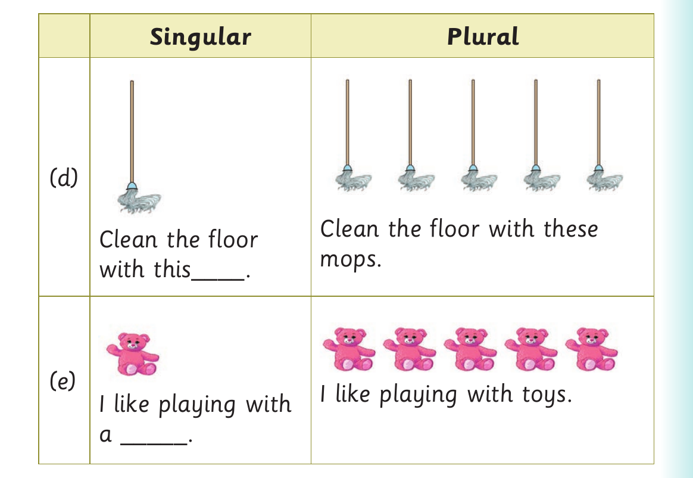
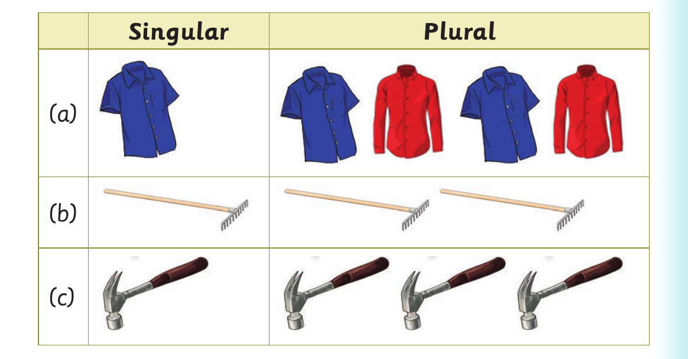

Singular and plural forms - sentences and pictures continued

Row D. A picture of one mop. Singular: Clean the floor with this dash. A picture of five mops. Plural: Clean the floor with these mops. Row E. A picture of one toy. Singular: I like playing with a dash. A picture of five toys. Plural: I like playing with toys.
5. Make one sentence for each of the following pictures orally or using sign language:

Picture table with singular and plural columns. Row A. A picture of one shirt; A picture of four shirts. Row B. A picture of one rake; A picture of two rakes. Row C. A picture of one hammer; A picture of three hammers.